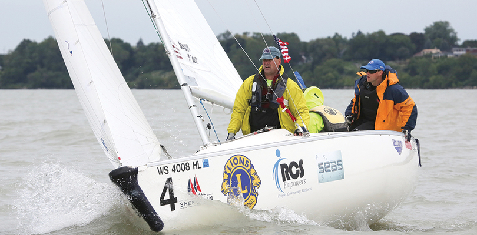

1. The private car is assumed to have widened our horizons and increased our mobility. When we consider our children’s mobility, they can be driven to more places (and more distant places) than they could visit without access to a motor vehicle. However, allowing our cities to be dominated by cars has progressively eroded children’s independent mobility. Children have lost much of their freedom to explore their own neighborhood or city without adult supervision. In recent surveys, when parents in some cities were asked about their own childhood experiences, the majority remembered having more, or far more, opportunities for going out on their own, compared with their own children today. They had more freedom to explore their own environment.
2. Children’s independent access to their local streets may be important for their own personal, mental and psychological development. Allowing them to get to know their own neighborhood and community gives them a "sense of place”. This depends on "active exploration”, which is not provided for when children are passengers in cars. (Such children may see more, but they learn less.) Not only is it important that children be able to get to local play areas by themselves, but walking and cycling journeys to school and to other destinations provide genuine play activities in themselves.
3. They are very significant time and money costs for parents associated with transporting their children to school, sport and other locations. Research in the United Kingdom estimated that this cost, in 1990, was between 10 billion and 20 million pounds. (AIPPG)
4. The reduction in children’s freedom may also contribute to a weakening of the sense of local community. As fewer children and adults use the streets as pedestrians, these streets become less sociable places. There is less opportunity for children and adults to have the spontaneous of community. This in itself may exacerbate fears associated with assault and molestation of children, because there are fewer adults available who know their neighbors’ children, and who can look out for their safety.
5. The extra traffic involved in transporting children results in increased traffic congestion, pollution and accident risk. As our roads become more dangerous, more parents drive their children to more places, thus contributing to increased levels of danger for the remaining pedestrians. Anyone who has experienced either the reduced volume of traffic in peak hour during school holidays, or the traffic jams near schools at the end of a school day, will not need convincing about these points. Thus, there are also important environmental implications of children’s loss of freedom.
6. As individuals, parents strive to provide the best upbringing they can for their children. However, in doing so, (e.g. by driving their children to sport, school or recreation) parents may be contributing to a more dangerous environment for children generally. The idea that “streets are for cars and back yards and playgrounds are for children” is a strongly held belief, and parents have little choice as individuals but to keep their children off the streets if they want to protect their safety.
7. In many parts of Dutch cities, and some traffic calmed precincts in Germany, residential streets are now places where cars must give way to pedestrians. In these areas, residents are accepting the view that the function of streets is not solely to provide mobility for cars. Streets may also be for social interaction, walking, cycling and playing. One of the most important aspects of these European streets, in terms of giving cities back to children, has been a range of “traffic calming” initiatives, aimed at reducing the volume and speed of traffic. These initiatives have had complex interactive effects, leading to a sense that children have been able to do this in safety. Recent research has demonstrated that children in many German cities have significantly higher levels of freedom to travel to places in their own neighborhood or city than children in other cities in the world.
8. Modifying cities in order to enhance children’s freedom will not only benefit children. Such cities will become more environmentally sustainable, as well as more sociable and more livable for all city residents. Perhaps, it will be our concern for our children’s welfare that convinces us that we need to challenge the dominance of the car in our cities.